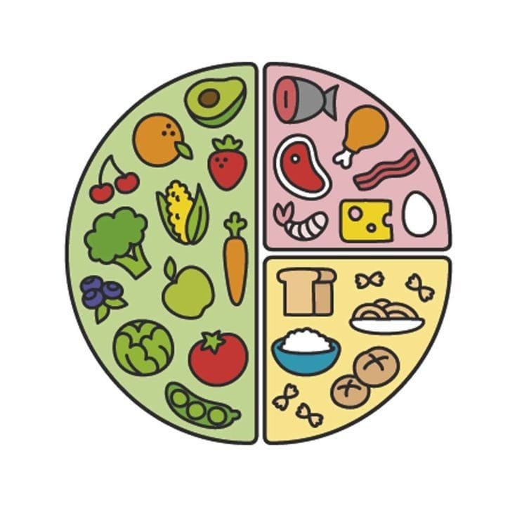

El plato del bien comer es una guía de alimentación que
forma parte de la Norma Oficial Mexicana (NOM), para la promoción y educación para la salud en materia alimentaria, la cual
establece criterios para la orientación nutritiva en México; ilustra cada uno de los grupos de alimentos con el fin de mostrar a la
población la variedad que existe de cada grupo resaltando que ningún alimento es más importante que otro, sino que debe haber una
combinación para que nuestra dieta diaria sea correcta y balanceada. La mejor forma de nutrir tu cuerpo territorio, tu comunidad territorio y el territorio mundo es consumiendo
alimentos locales y de temporada:
con ello se ahorra energía al no necesitar que el producto viaje grandes distancias para su comercialización
así, nos aseguramos de llevar una dieta sana, nutritiva y equilibrada, además de
apoyar al comercio local,

|